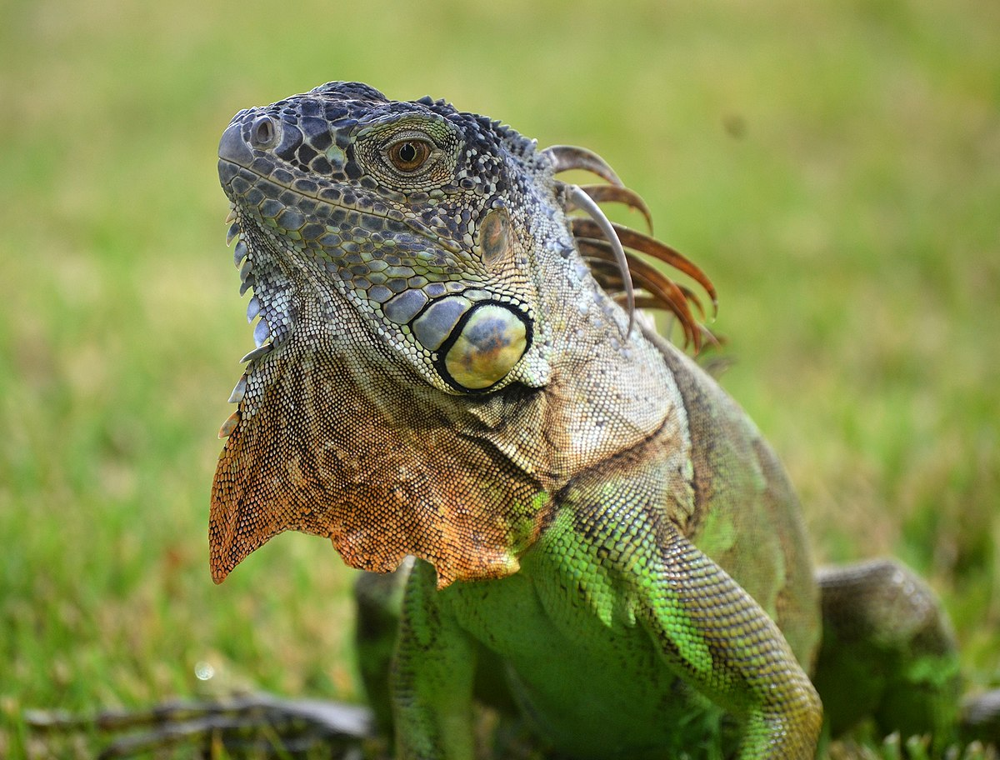

Iguana (Iguana iguana)

Hábitat y Estilo de Vida
Las iguanas viven principalmente en selvas tropicales, zonas costeras y desiertos, adaptándose bien a climas cálidos.
Características
- Cuerpo alargado con una larga cola.
- Piel escamosa con colores verdes o marrones.
- Tienen una cresta de espinas a lo largo de su espalda.
- Son excelentes trepadoras y pasan la mayor parte del tiempo en los árboles.
- Poseen un tercer ojo en la parte superior de su cabeza para detectar cambios de luz.
Volver al Inicio